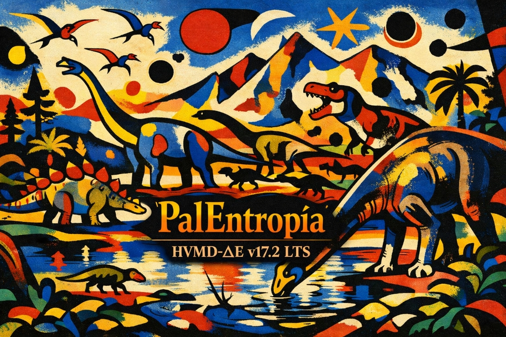

Bienvenido
PalEntropía es un proyecto dedicado a la divulgación de la paleontología mediante Paleofichas, vídeos, reconstrucciones paleoartísticas y experiencias visuales inspiradas en la evolución de la vida a lo largo de más de 500 millones de años.
🎬 Vídeo destacado
Descubre el universo de PalEntropía mediante este vídeo de presentación y conoce la filosofía del proyecto.

▶ Ver en YouTube
📱 Recopilaciones de Shorts
En esta sección podrás acceder próximamente a las recopilaciones de Paleofichas, Animales Extraños, Paleoarte y otras series de vídeos cortos del proyecto.